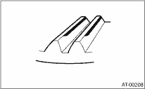
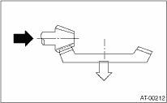
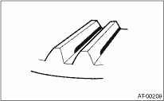

1. Remove the liquid gasket from the mating surface completely.
2. Install the oil pump housing assembly to the converter case, and secure them by tightening the four bolts evenly.
NOTE:
Use an old gasket or aluminum washer to prevent damaging the mating surface of the housing.
Tightening torque:
41 N·m (4.2 kgf-m, 30.4 ft-lb)

3. Rotate the drive pinion a few times using ST1 and ST2.
| ST1 498937110 | HOLDER |
| ST2 499787700 | WRENCH |
4. Adjust the drive pinion and hypoid driven gear backlash. 
5. Apply dye penetrant evenly to the surfaces of three or four teeth on the hypoid driven gear. Rotate the drive pinion back and forward several times. Remove the oil pump housing, and check the teeth contact pattern.
If the teeth contact is inappropriate, adjust the backlash or thickness of the shim.
• Correct tooth contact
Check item: Tooth contact surface is slightly shifted toward the toe side under a no-load condition. (When driving, it moves towards the heel side.)

|
(A) |
Toe side |
|
(B) |
Heel side |
• Face contact
Check item: Backlash is too large.
Contact pattern

Corrective action: Increase thickness of drive pinion height adjusting washer in order to bring the drive pinion shaft closer to the hypoid driven gear.

• Flank contact
Check item: Backlash is too small.
Contact pattern

Adjustment: Reduce the thickness of pinion height adjusting washer according to the procedure to move the drive pinion shaft away from the hypoid driven gear.

• Toe contact (inside contact)
Check item: Teeth contact area is too small.
Contact pattern

Adjustment: Reduce the thickness of pinion height adjusting washer according to the procedure for moving the drive pinion shaft away from the hypoid driven gear.
• Heel contact (outside end contact)
Check item: Teeth contact area is too small.
Contact pattern

Corrective action: Increase thickness of drive pinion height adjusting washer in order to bring the drive pinion shaft closer to the hypoid driven gear.
6. If tooth contact is correct, mark the differential side retainer position and loosen it. After fitting a new O-ring and oil seal, screw in the differential side retainer to the marked position. Tighten the lock plate with specified torque.
Tightening torque:
25 N·m (2.5 kgf-m, 18.1 ft-lb)

|
(A) |
Lock plate |